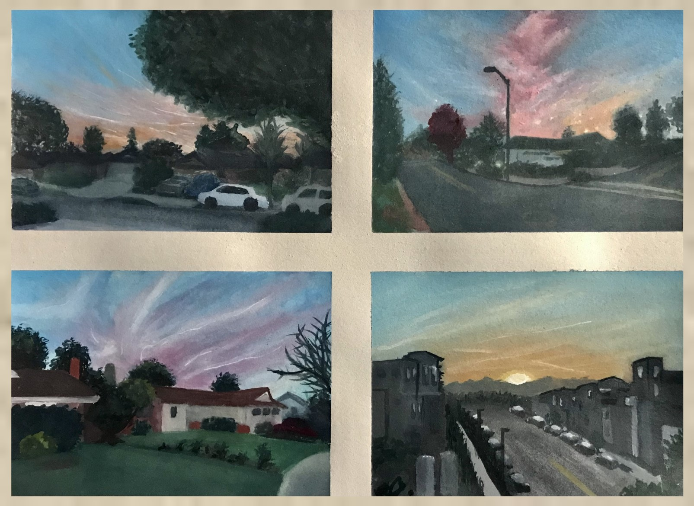

Sunsets
- Media
- Gouache
I chose four settings for sunsets to paint. The sun looked really pretty on those summer evenings after my runs around the neighborhood. I had premixed colors on my palette to work quickly before the sky changed. Finer details were added afterward to ensure I had the correct colors of the sky at that moment.
